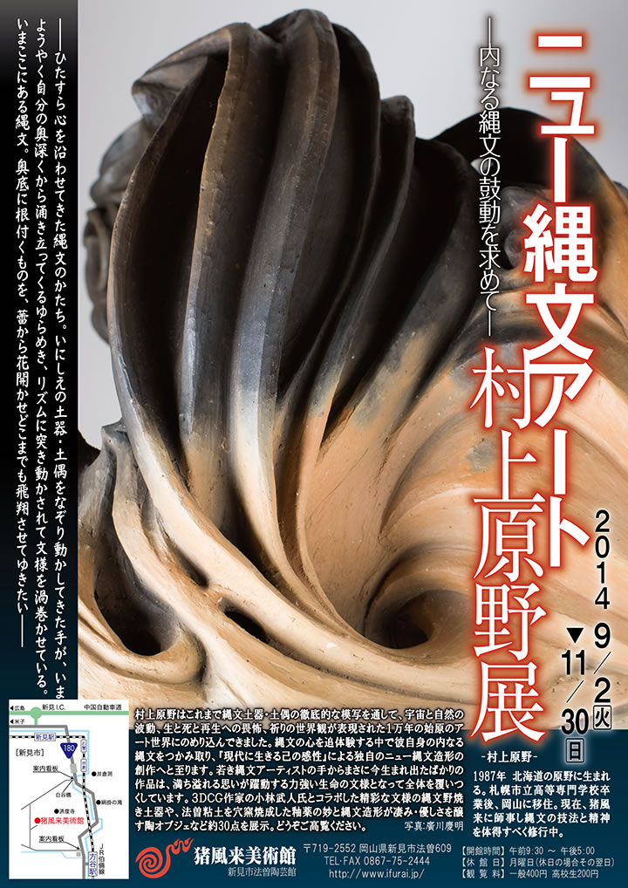
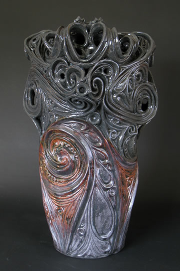
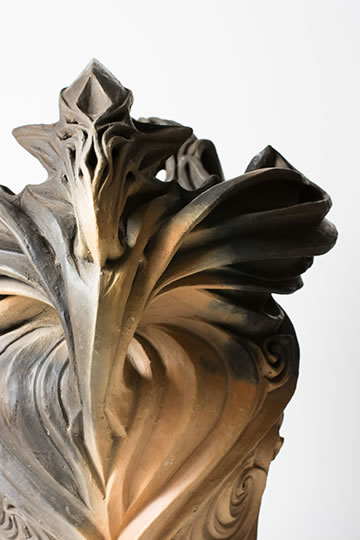
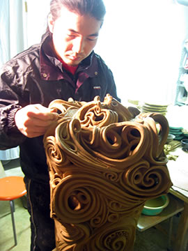
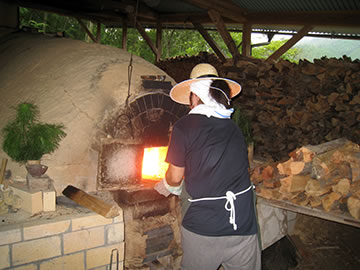
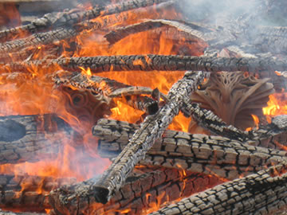
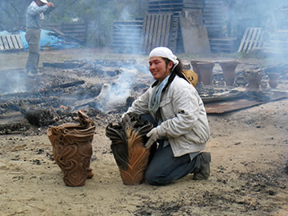

|  |
| 【ニュー縄文アート 村上原野展チラシ】 →PDF版を開く |
――ひたすら心を沿わせてきた縄文のかたち。
いにしえの土器・土偶をなぞり動かしてきた手が、
いまようやく自分の奥深くから涌き立ってくるゆらめき、
リズムに突き動かされて文様を渦巻かせている。
いまここにある縄文。
奥底に根付くものを、蕾から花開かせどこまでも飛翔させてゆきたい――
=∴=∵=∴=∵=∴=∵=∴=∵=∴=∵=∴=∵=∴=∵=∴=∵=∴=∵=∴=∵=∴=∵=∴=∵=∴=∵=∴=
村上原野はこれまで縄文土器・土偶の徹底的な模写を通して、宇宙と自然の波動、生と死と再生への畏怖、
祈りの世界観が表現された１万年の始原のアート世界にのめり込んできました。
縄文の心を追体験する中で彼自身の内なる縄文をつかみ取り、『現代に生きる己の感性』による独自の
ニュー縄文造形の創作へと至ります。
若き縄文アーティストの手からまさに今生まれ出たばかりの作品は、満ち溢れる思いが躍動する力強い
生命の文様となって全体を覆いつくしています。
３ＤＣＧ作家の小林武人氏とコラボした精彩な文様の縄文野焼き土器や、法曽粘土を穴窯焼成した釉薬
の妙と縄文造形が凄み・優しさを醸す陶オブジェなど約30点を展示。
どうぞご高覧ください。
|  |  |
=∴=∵=∴=∵=∴=∵=∴=∵=∴=∵=∴=∵=∴=∵=∴=∵=∴=∵=∴=∵=∴=∵=∴=∵=∴=∵=∴=
-村上原野-
1987年 北海道の原野に生まれる。
札幌市立高等専門学校卒業後、岡山に移住。
現在、猪風来に師事し縄文の技法と精神を体得すべく修行中。
|  |  |
| 【陶オブジェ制作と穴窯焚き】 | |
|  |  |
| 【創作土器の縄文野焼き】 | |